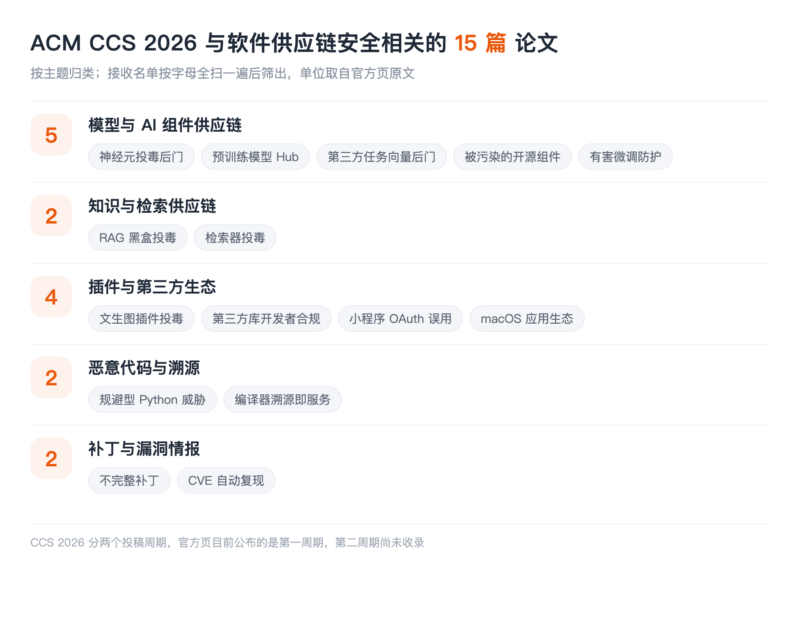

本文看点
01
11篇供应链相关论文
02
模型制品成投毒主目标
03
预训练模型Hub被系统查
01
LIST INFO
本期说明
【会议】ACM CCS 2026，第 33 届 ACM 计算机与通信安全会议，2026 年 11 月 15 日至 19 日，荷兰海牙
【来源】CCS 2026 官方接收论文列表（First Cycle）
【口径】只收与软件供应链安全直接相关的：组件与生态、分发与构建、溯源、补丁传播。通用漏洞挖掘和模糊测试不收，哪怕 CCS 这类论文占了大头

— CCS 2026 供应链相关论文的主题分布
两点说明。其一，CCS 分两个投稿周期，官方页目前公布的是第一周期，第二周期的论文还没上去，所以这一期后续可能要补。其二，多数论文全文还没读，介绍严格限制在标题和作者团队能支撑的范围内。单位取自官方接收页原文。
这一期的重心非常统一，统一到几乎不用我总结：CCS 这批供应链论文里，被投毒、被污染、被后门的对象基本都不是软件包，而是模型侧的制品：预训练模型、任务向量、开源组件、插件、微调过程。ASE 那期的主角是包和依赖，S&P 那期是 MCP 和浏览器扩展，到了 CCS 就成了模型本身。
02
MODELS
模型与 AI 组件供应链
01
Implementation Bugs as Attacks: Adversarial Neuron Fuzzing and Supply-Chain Backdoors
Zizhuang Deng, Yiying Shan, Sanchuan Chen, Guozhu Meng, Qingxin Wang, Xueqing Zhang, Tong Liu
Shandong University, Auburn University, Institute of Information Engineering, Chinese Academy of Sciences
把实现层面的 bug 当成攻击手段，用对抗性神经元模糊测试来构造供应链后门。这个思路和常见的数据投毒、权重篡改都不一样：它不改训练数据也不改模型语义，而是利用实现里的缺陷做文章，因此常规的模型完整性校验很可能看不见。
02
Your Space is My Zone: Demystifying the Security Risks of AI-Powered Applications on Pre-Trained Model Hubs
Yacong Gu, Lingyun Ying, Zidong Zhang, Yingyuan Pu, Xiaoxue Huang, Jiawei Zhou, Wenjie Zhu, Donghong Sun, Haixin Duan
Tsinghua University, QI-ANXIN Technology Research Institute
系统梳理预训练模型 Hub 上 AI 应用的安全风险。模型 Hub 现在就是模型时代的包仓库：任何人可以上传、任何人可以拉取、大量应用直接挂在上面运行。本账号解读过影子 API 那篇，里面的 Hugging Face 恶意数据集攻击链就是这个生态的一个切面，而这篇是对整个生态的系统排查。
03
BadTV: Unveiling Backdoor Threats in Third-Party Task Vectors
Chia-Yi Hsu, Yu-Lin Tsai, Zhe Yu, Yan-Lun Chen, Chih-Hsun Lin, Chia-Mu Yu, Yang Zhang, Chun-Ying Huang, Jun Sakuma
National Yang Ming Chiao Tung University, University of California, Berkeley, RIKEN AIP, CISPA Helmholtz Center for Information Security, Institute of Science Tokyo
第三方任务向量里的后门威胁。任务向量是模型能力的可组合单元，你可以下载别人训好的一个向量、加到自己的模型上直接获得某种能力。它的分发和组合方式几乎就是包管理器的翻版，而这篇要说的是：这种可组合性同样把后门变成了可分发的商品。
04
Don't Trust the AI Ecosystem: Analyzing Privacy Leakage in Compromised Open-Source Components
Jin-Seong Kim, Han Ju Lee, Seok-Won Hong, Takeshi Takahashi, Chansu Han, Tomohiro Morikawa, Seok Hwan Choi
Yonsei University, National Institute of Information and Communications Technology, University of Hyogo
分析 AI 生态里被污染的开源组件造成的隐私泄露。标题的口吻很直接，指向的是同一件事：AI 应用堆在一层层开源组件之上，其中任何一层被污染，泄露的都是最上层用户的数据。
05
Token Buncher: Shielding LLMs from Harmful Reinforcement Learning Fine-Tuning
Weitao Feng, Lixu Wang, Peizhuo Lv, Tianyi Wei, Jie Zhang, Chongyang Gao, Sinong Simon Zhan, Wei Dong
Nanyang Technological University, A*STAR, Northwestern University
防护有害的强化学习微调。微调是模型供应链上一个特别的环节：模型交付出去之后，下游还能继续改它。别人拿走你的模型做有害微调，从供应链视角看就是制品在下游被改坏了，而原厂既看不见也管不着。
03
PLUGINS
插件与第三方生态
06
Customization under Fire: Plugin Poisoning in Text-to-Image Ecosystem
Jiahao Chen, Xing He, Yong Yang, Xinfeng Li, Chunyi Zhou, Junhao Li, Zhe Ma, Tianyu Du, Shouling Ji
Zhejiang University, Nanyang Technological University, Guangzhou University, Tianjin University
文生图生态里的插件投毒。LoRA、ControlNet 这类插件已经形成了一个巨大的共享生态，用户从社区下载别人训好的插件直接叠加使用，几乎没有任何来源校验。这个生态的分发模式和 npm 极其相似，成熟度却差着十几年。
07
Assessing Privacy Compliance Awareness and Practices Among Mobile Third-party Library Developers
Fares F. Alharbi, Ece Gumusel, Luyi Xing, Xiaojing Liao
Indiana University Bloomington, Rutgers University, University of Illinois Urbana-Champaign
调查移动第三方库开发者的隐私合规意识和实践。这篇的视角很少见：它不查库有没有问题，而是查写库的人怎么想。供应链治理最终要落到上游开发者的行为上，而我们对这群人的认知长期是空白的。
08
Mini-Programs, Mega-Problems: Unveiling OAuth-based Authentication Misuses in Mini-Programs via Dynamic Analysis
Zidong Zhang, Zhentao Xie, Lingyun Ying, Qinsheng Hou, Yacong Gu, Wenrui Diao, Jianliang Wu
Simon Fraser University, Shandong University, QI-ANXIN Technology Research Institute, Shanghai Jiao Tong University, Tsinghua University
用动态分析挖小程序里的 OAuth 认证误用。小程序是一个封闭平台上的第三方应用生态，宿主应用、小程序开发者、后端服务三方之间的信任关系很容易搭错，而用户看到的只是宿主的品牌。
04
PROV
溯源与构建
09
Compiler Provenance as a Service: Decoupled Identification for Composite Provenance and Operational Resilience
Han Gao, Antonio Bianchi, Z. Berkay Celik, Dave (Jing) Tian
Purdue University
把编译器溯源做成服务，还要能处理复合溯源。给定一个二进制，判断它是用什么编译器、什么优化选项构建的，这是逆向和取证的基础能力，也是供应链上判断"这个制品到底从哪来"的一手证据。当源码不可得时，溯源就是唯一能查的东西。
05
PATCH
补丁与漏洞情报
10
From Fix to Flaw: Understanding and Revealing Incomplete Patches for Link Following Vulnerabilities
Bocheng Xiang, Yuan Zhang, Hao Huang, Youkun Shi
Fudan University
研究不完整补丁。补丁打了但没补干净，漏洞还在，而扫描器和合规流程都已经把它标成已修复，这是最危险的一类状态。ASE 那期有一篇"一个漏洞多个补丁"，讲的是同一件事的另一面，两篇可以对着读。
11
CVE-Genie: An LLM-Based Multi-Agent Framework for Reproducing CVEs
Saad Ullah, Praneeth Balasubramanian, Wenbo Guo, Amanda Burnett, Hammond Pearce, Christopher Kruegel, Giovanni Vigna, Gianluca Stringhini
Boston University, University of California, Santa Barbara, Arizona State University, UNSW Sydney
用多智能体框架自动复现 CVE。这件事的价值在漏洞情报的下游：一条 CVE 说影响某个版本区间，但到底能不能在你的环境里复现，决定了它对你是不是真风险。能自动复现，等于给漏洞情报补上了一个可验证的环节。
06
TAKEAWAYS
一点观察
被投毒的制品变了。 这一期最清楚的信号是攻击对象的迁移：模型权重、任务向量、文生图插件、开源组件、微调过程，五篇都在讲同一类事，只是位置不同。软件供应链安全研究了十几年的那套问题，正在模型这条链上被完整地重放一遍，而且每一环都比包生态年轻得多、治理设施也少得多。
三个会议三种重心，只看一个会严重失真。 ASE 的主角是包、依赖和 SBOM，S&P 是 MCP、浏览器扩展和插件生态，CCS 是模型制品。它们讲的是同一个大问题在不同层的表现：软工会议关注工程治理，安全会议关注攻击面，而 CCS 这边最贴近"模型即制品"这个新形态。把三份名单叠在一起，才是这个方向今年的真实全貌。
任务向量这类东西值得单独盯。 它是可下载、可组合、可叠加的模型能力单元，分发方式和包管理器几乎一致，但它既不是代码也不是数据，现有的扫描器、SBOM 规范、来源验证机制没有一样能直接套上去。一个新的可分发单元出现时，最危险的窗口期就是它已经在被广泛使用、而治理设施还完全没有的这段时间。
补丁这条线在两个会议同时出现。 CCS 的不完整补丁和 ASE 的一个漏洞多补丁，指向的是同一个盲区：我们的合规状态是按"补丁有没有打"算的，而不是按"洞有没有真的堵上"算的。这两者之间的差距，目前没有任何工具能自动告诉你。